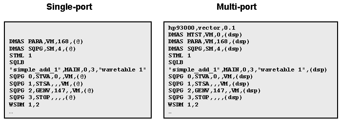

Multi-Port Vector Conversion
The first step to converting the vectors of a single-port program to a multi-port program is to convert all of the binary vector files to multi-port vectors.
In simple digital vectors, only a few changes are required such as the replacement of the "@" symbol, which stands for all pins, with the assigned port name.
In this example, for the DSP vectors, the (@) is changed to (dsp).
The figure below shows the single port vector binary file on the left and the corresponding multi-port file on the right (where "simple_add_1.binl" was the name of the vector).

For information on creating multi-port burst labels, see Multi-port burst labels.
In this example, for simplicity, it was assumed that the CODEC program was already developed in multi-port and does not need conversion.
Functional changes
- Introduced before SmarTest 6.3.2